Copy batch: one PR, one review
What "one PR per area" means: every copy fix from the audit on one branch, checked here in one pass instead of seven PRs.
1 · Sign out, everywhere F37
Settings, its confirm sheet, the menu drawer and the gate screen say Sign out, matching Sign in, Figma and DESIGN.md.

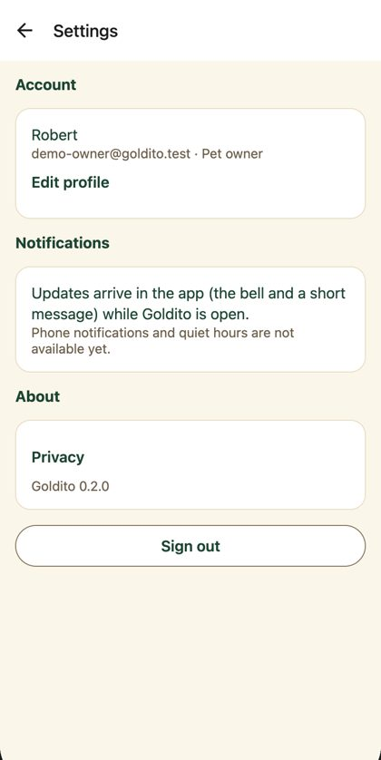
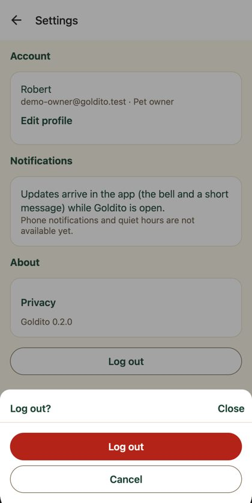
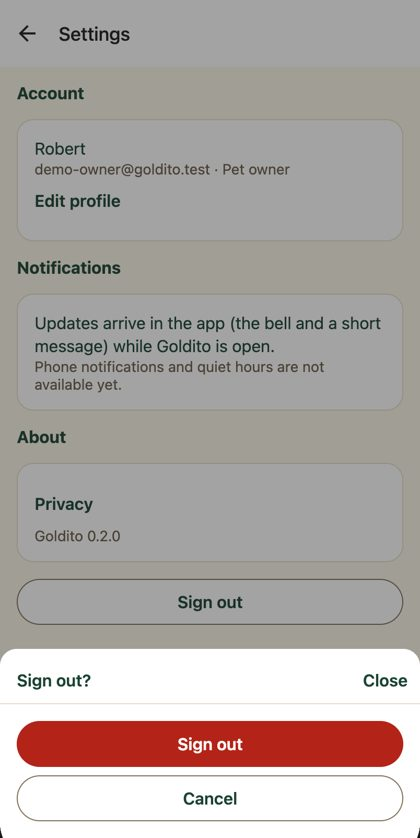
2 · Weekly rules, said once F38 · F36
The sheet is titled like its button, and two 4-line paragraphs become one line each.
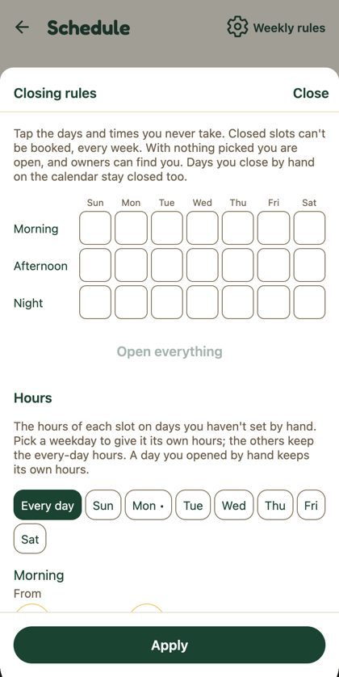
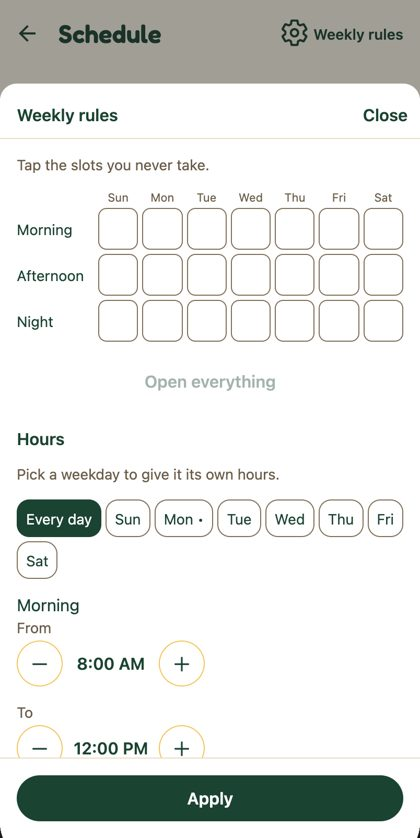
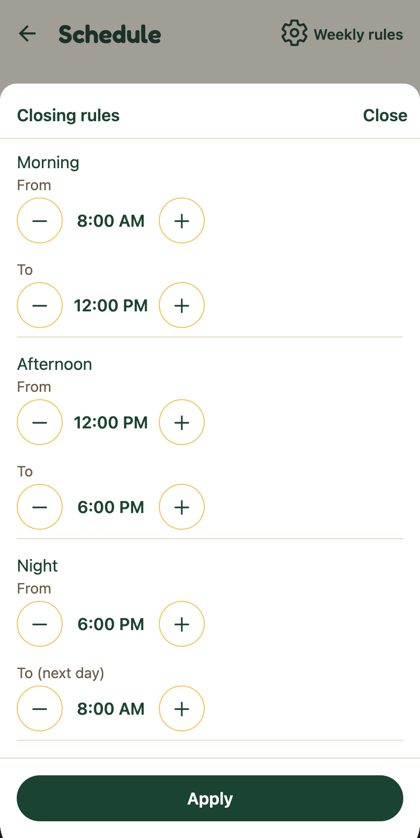
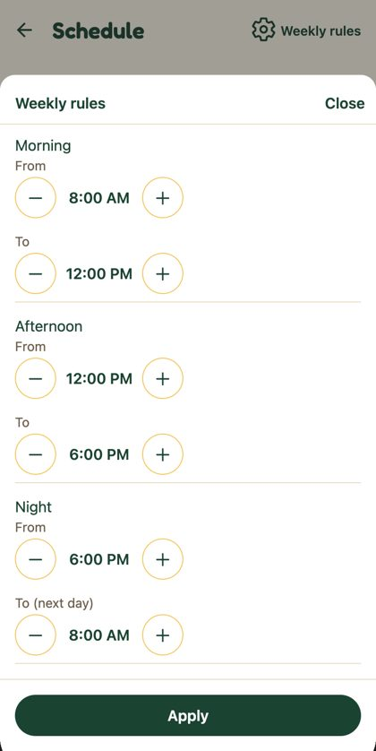
3 · Buttons are words F07
Changed Oct 21 after review: the line icons are gone. Labels are plain text (History, Write a page, Life Record, Write a care checklist, Add to favorites); the screenshots below still show the icon version. Illustrations moved to the patterns try-out.
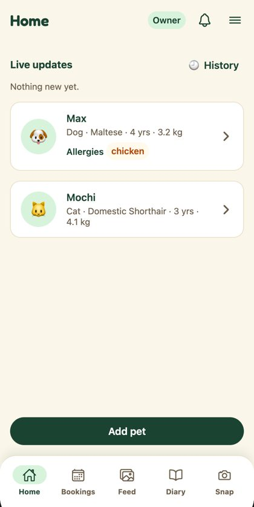
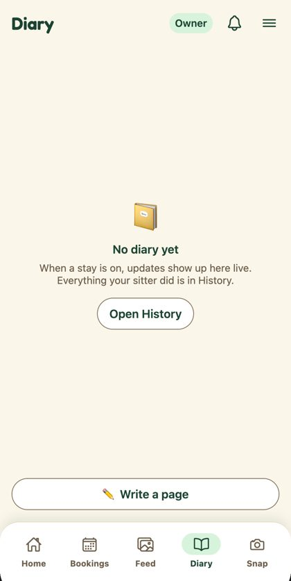
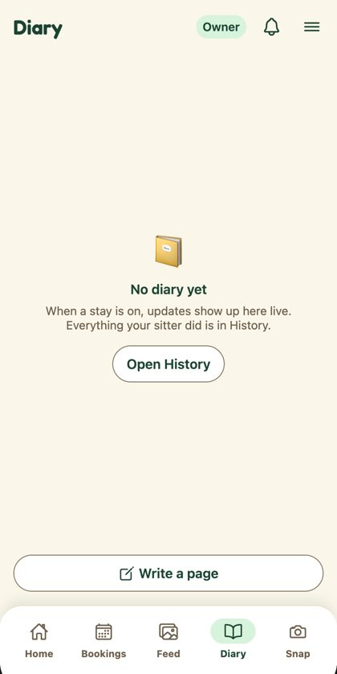

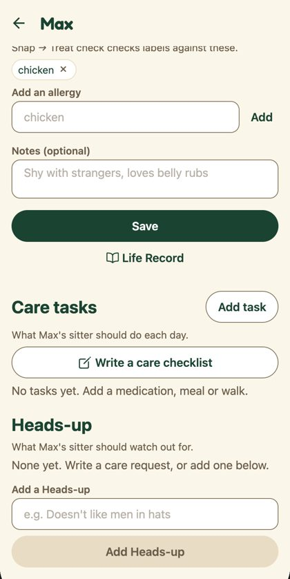
4 · Dates read like the rest of the app F35 · F40
Recent checks show Oct 21, not 10/21/2026. Signed consents and the sitter search bar use the shared date helpers too (Oct 22 to 24, no dash).
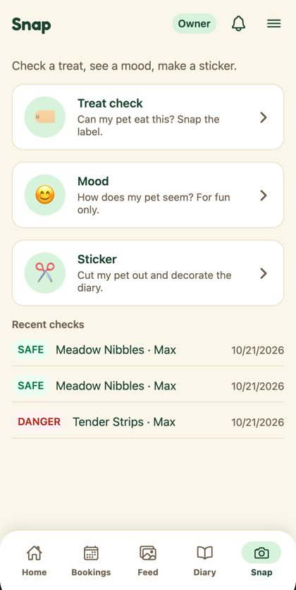
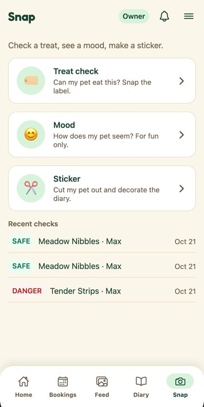
5 · Shorter helper text F36
Entry info, Welcome and the sitter's multi-owner hint say the one thing that matters.
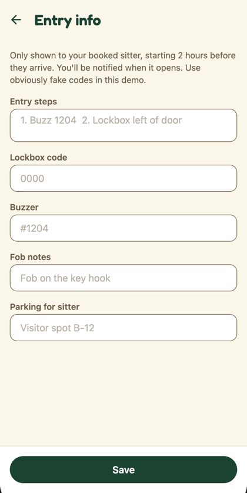
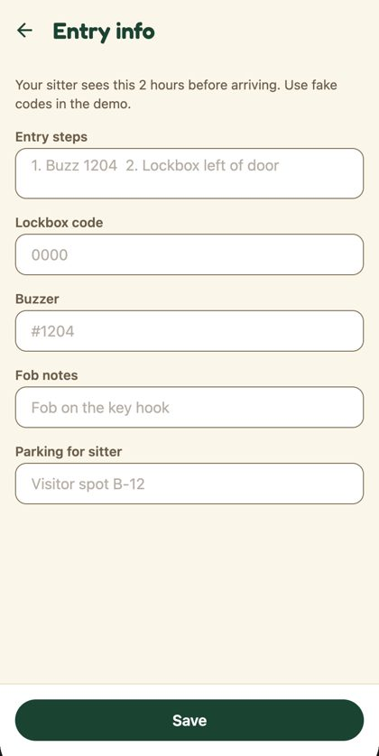
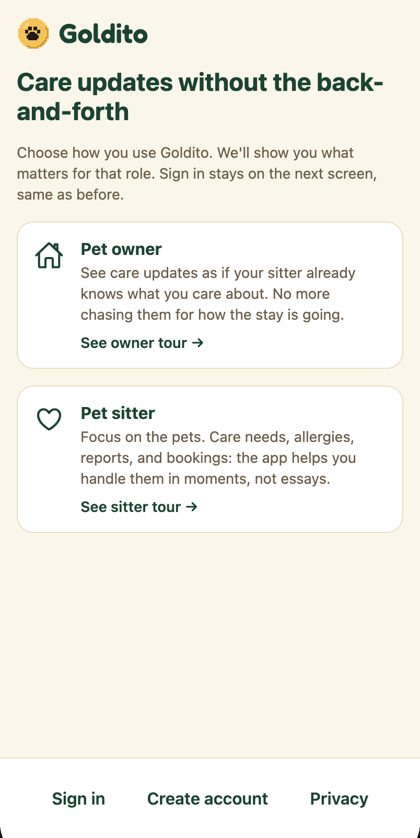
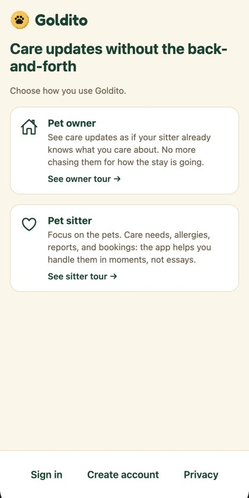
Also in this batch, no screenshot
- Empty states (F66): owner Bookings uses the EmptyState card ("Your stays show up here once a sitter says yes."); sitter Today reads "No pets in your care today. Open your schedule to take bookings." Neither demo account is empty, so they don't show here.
- Sitter profile hint: "One owner at a time, or several within your max."
- e2e tests updated for the new wording.
Left out on purpose
- Chat date format: the chat screen is being rewritten in PR #215, so changing it now would only conflict.
- Feed's in-care empty state ("No photos yet today"): it needs stay data, so it goes with the Home stay hero (batch 6).
On the pet page, the "Needs / Source" block is missing on the local side only. It comes from the AI backend, which blocks localhost. It's not caused by this branch.
The code
Full diff (24 files)
diff --git a/frontend/app/(public)/welcome/index.tsx b/frontend/app/(public)/welcome/index.tsx
index 81e4d56..da67789 100644
--- a/frontend/app/(public)/welcome/index.tsx
+++ b/frontend/app/(public)/welcome/index.tsx
@@ -24,8 +24,7 @@ export default function WelcomeLanding() {
Care updates without the back-and-forth
</Text>
<Text style={styles.lead}>
- Choose how you use Goldito. We'll show you what matters for that role. Sign in stays on the
- next screen, same as before.
+ Choose how you use Goldito.
</Text>
<Pressable
diff --git a/frontend/app/index.tsx b/frontend/app/index.tsx
index 40ecc23..de58f5f 100644
--- a/frontend/app/index.tsx
+++ b/frontend/app/index.tsx
@@ -30,7 +30,7 @@ function ProfileError() {
message="Check your connection and try again, or log out and sign in again."
action={{ label: "Try again", onPress: reload }}
/>
- <TextButton label="Log out" onPress={() => void signOut()} testID="gate-logout" />
+ <TextButton label="Sign out" onPress={() => void signOut()} testID="gate-logout" />
</View>
);
}
diff --git a/frontend/app/owner/(tabs)/bookings.tsx b/frontend/app/owner/(tabs)/bookings.tsx
index 1ce846a..057fc71 100644
--- a/frontend/app/owner/(tabs)/bookings.tsx
+++ b/frontend/app/owner/(tabs)/bookings.tsx
@@ -189,7 +189,9 @@ export default function OwnerBookings() {
<ChatList items={chats.items} onLeave={(id) => void chats.leave(id)} />
</View>
) : null}
- {state.bookings.length === 0 ? <Text style={styles.hint}>No bookings yet</Text> : null}
+ {state.bookings.length === 0 ? (
+ <EmptyState emoji="🗓️" title="No bookings yet" message="Your stays show up here once a sitter says yes." />
+ ) : null}
{state.bookings.length > 0 ? (
<View style={styles.section}>
<Text accessibilityRole="header" style={styles.heading}>
diff --git a/frontend/app/owner/bookings/[bookingId]/review.tsx b/frontend/app/owner/bookings/[bookingId]/review.tsx
index 7285521..3b3fa7c 100644
--- a/frontend/app/owner/bookings/[bookingId]/review.tsx
+++ b/frontend/app/owner/bookings/[bookingId]/review.tsx
@@ -100,10 +100,11 @@ export default function ReviewScreen() {
>
<Text style={styles.hint}>{`Favorites show first when you book. ${booking.sitterName} isn't told.`}</Text>
<Button
- label="⭐ Add to favorites"
+ label="Add to favorites"
+ icon="star-outline"
onPress={() => {
void setFavoriteSitter(booking.sitterId, true)
- .then(() => toast.show(`${booking.sitterName} is a favorite ⭐`))
+ .then(() => toast.show(`${booking.sitterName} is a favorite`))
.catch((e: Error) => toast.show(e.message))
.finally(() => leave(booking.id));
}}
diff --git a/frontend/app/owner/home-access.tsx b/frontend/app/owner/home-access.tsx
index c257576..638341b 100644
--- a/frontend/app/owner/home-access.tsx
+++ b/frontend/app/owner/home-access.tsx
@@ -92,8 +92,7 @@ export default function HomeAccessScreen() {
<View style={styles.root}>
<Screen contentStyle={styles.content}>
<Text style={styles.note} testID="home-access-note">
- Only shown to your booked sitter, starting 2 hours before they arrive. You'll be notified when
- it opens. Use obviously fake codes in this demo.
+ Your sitter sees this 2 hours before arriving. Use fake codes in the demo.
</Text>
<TextField
label="Entry steps"
diff --git a/frontend/app/owner/pets/[petId].tsx b/frontend/app/owner/pets/[petId].tsx
index 845d5ac..0331a3b 100644
--- a/frontend/app/owner/pets/[petId].tsx
+++ b/frontend/app/owner/pets/[petId].tsx
@@ -71,7 +71,7 @@ export default function PetProfileScreen() {
router.back();
}}
/>
- <TextButton label="📖 Life Record" onPress={() => router.push(`/owner/pets/${pet.id}/record`)} testID="open-life-record" />
+ <TextButton label="Life Record" icon="book-outline" onPress={() => router.push(`/owner/pets/${pet.id}/record`)} testID="open-life-record" />
{session.status === "signedIn" ? <CareTasksSection pet={pet} userId={session.profile.id} /> : null}
{session.status === "signedIn" ? <HeadsUpSection pet={pet} userId={session.profile.id} /> : null}
</Screen>
diff --git a/frontend/app/profile.tsx b/frontend/app/profile.tsx
index ab82c8c..7c57188 100644
--- a/frontend/app/profile.tsx
+++ b/frontend/app/profile.tsx
@@ -502,7 +502,7 @@ export default function ProfileScreen() {
{errors.services ? <Text style={styles.error}>{errors.services}</Text> : null}
<CheckRow
label="Take pets from more than one owner at a time"
- hint="Off: one owner's pets at a time, so other owners can't book dates that are on hold or booked. On: several owners, within your max pets."
+ hint="One owner at a time, or several within your max."
checked={multiOwner}
onChange={setMultiOwner}
testID="profile-multi-owner"
diff --git a/frontend/app/settings.tsx b/frontend/app/settings.tsx
index 23bdb71..ed11e3a 100644
--- a/frontend/app/settings.tsx
+++ b/frontend/app/settings.tsx
@@ -13,7 +13,7 @@ import { useSession } from "../providers/SessionProvider";
import { useThemedStyles } from "../providers/ThemeProvider";
import { Theme } from "../theme/themes";
-/** Menu → Settings (Phase 11.11, D47): the account (Edit profile), notifications, Privacy, the app version and Log out. */
+/** Menu → Settings (Phase 11.11, D47): the account (Edit profile), notifications, Privacy, the app version and Sign out. */
export default function SettingsScreen() {
const styles = useThemedStyles(makeStyles);
const session = useSession();
@@ -55,10 +55,10 @@ export default function SettingsScreen() {
Goldito {version}
</Text>
</Card>
- <Button label="Log out" variant="secondary" onPress={() => setConfirmLogOut(true)} testID="settings-log-out" />
- <Sheet visible={confirmLogOut} title="Log out?" onClose={() => setConfirmLogOut(false)} testID="settings-log-out-sheet">
+ <Button label="Sign out" variant="secondary" onPress={() => setConfirmLogOut(true)} testID="settings-log-out" />
+ <Sheet visible={confirmLogOut} title="Sign out?" onClose={() => setConfirmLogOut(false)} testID="settings-log-out-sheet">
<View style={styles.confirm}>
- <Button label="Log out" variant="danger" onPress={() => void session.signOut()} testID="settings-log-out-confirm" />
+ <Button label="Sign out" variant="danger" onPress={() => void session.signOut()} testID="settings-log-out-confirm" />
<Button label="Cancel" variant="secondary" onPress={() => setConfirmLogOut(false)} />
</View>
</Sheet>
diff --git a/frontend/app/sitter/(tabs)/index.tsx b/frontend/app/sitter/(tabs)/index.tsx
index f0d945a..ecce3c4 100644
--- a/frontend/app/sitter/(tabs)/index.tsx
+++ b/frontend/app/sitter/(tabs)/index.tsx
@@ -105,8 +105,8 @@ export default function SitterHome() {
<Screen>
<EmptyState
emoji="🌤️"
- title="No bookings yet"
- message="Open your schedule so owners can find you."
+ title="No pets in your care today"
+ message="Open your schedule to take bookings."
action={{ label: "Open your schedule", onPress: () => router.push("/sitter/schedule") }}
/>
</Screen>
diff --git a/frontend/components/CareTasksSection.tsx b/frontend/components/CareTasksSection.tsx
index 58f5923..9b15110 100644
--- a/frontend/components/CareTasksSection.tsx
+++ b/frontend/components/CareTasksSection.tsx
@@ -144,7 +144,8 @@ export function CareTasksSection({ pet, userId }: Props) {
: `What ${pet.name}'s sitter should do each day.`}
</Text>
<Button
- label={stay ? "✍️ Write a care request" : "✍️ Write a care checklist"}
+ label={stay ? "Write a care request" : "Write a care checklist"}
+ icon="create-outline"
variant="secondary"
onPress={() => router.push(`/owner/pets/${pet.id}/care-request`)}
testID="care-request-open"
diff --git a/frontend/components/ClosingRulesSheet.tsx b/frontend/components/ClosingRulesSheet.tsx
index 42231ab..bf4037e 100644
--- a/frontend/components/ClosingRulesSheet.tsx
+++ b/frontend/components/ClosingRulesSheet.tsx
@@ -116,7 +116,7 @@ export function ClosingRulesSheet({ visible, rules, hours, weekdayHours, saving,
return (
<Sheet
visible={visible}
- title="Closing rules"
+ title="Weekly rules"
onClose={onClose}
testID="rules-sheet"
footer={
@@ -129,8 +129,7 @@ export function ClosingRulesSheet({ visible, rules, hours, weekdayHours, saving,
}
>
<Text style={styles.hint}>
- Tap the days and times you never take. Closed slots can't be booked, every week. With nothing picked you are
- open, and owners can find you. Days you close by hand on the calendar stay closed too.
+ Tap the slots you never take.
</Text>
<View style={styles.grid} testID="rules-grid">
@@ -168,8 +167,7 @@ export function ClosingRulesSheet({ visible, rules, hours, weekdayHours, saving,
<Text style={styles.heading}>Hours</Text>
<Text style={styles.hint}>
- The hours of each slot on days you haven't set by hand. Pick a weekday to give it its own hours; the others keep
- the every-day hours. A day you opened by hand keeps its own hours.
+ Pick a weekday to give it its own hours.
</Text>
<View style={styles.dayChips} testID="rules-hours-days">
{(["all", 0, 1, 2, 3, 4, 5, 6] as const).map((day) => {
diff --git a/frontend/components/ConsentCard.tsx b/frontend/components/ConsentCard.tsx
index d378aee..40966bc 100644
--- a/frontend/components/ConsentCard.tsx
+++ b/frontend/components/ConsentCard.tsx
@@ -1,6 +1,7 @@
import { useState } from "react";
import { Pressable, StyleSheet, Text, View } from "react-native";
+import { formatInstant } from "../features/schedule/dates";
import { DEMO_CONSENT_FOOTER, type ConsentTemplate } from "../features/agreements/templates";
import { useThemedStyles } from "../providers/ThemeProvider";
import { Theme } from "../theme/themes";
@@ -49,7 +50,7 @@ export function ConsentCard({ template, checked, onCheckedChange, signedAt, disa
) : null}
{signed ? (
<Text style={styles.signed} testID={testID ? `${testID}-signed` : undefined}>
- {`Signed ${new Date(signedAt!).toLocaleString()}`}
+ {`Signed ${formatInstant(signedAt!)}`}
</Text>
) : (
<CheckRow
diff --git a/frontend/components/HeaderMenu.tsx b/frontend/components/HeaderMenu.tsx
index 782d2c2..641574c 100644
--- a/frontend/components/HeaderMenu.tsx
+++ b/frontend/components/HeaderMenu.tsx
@@ -15,7 +15,7 @@ type IconName = ComponentProps<typeof Ionicons>["name"];
const DURATION = 260;
-/** Header ≡ (#147): a full-width drawer from the right. You → Profile, Notifications, Schedule (sitters), What's new, Settings, Log out. */
+/** Header ≡ (#147): a full-width drawer from the right. You → Profile, Notifications, Schedule (sitters), What's new, Settings, Sign out. */
export function HeaderMenu() {
const theme = useTheme();
const styles = useThemedStyles(makeStyles);
@@ -112,8 +112,8 @@ export function HeaderMenu() {
{confirming ? (
<View style={styles.confirm}>
- <Text style={styles.name}>Log out?</Text>
- <Button label="Log out" variant="danger" onPress={() => close(() => void signOut())} testID="log-out-confirm" />
+ <Text style={styles.name}>Sign out?</Text>
+ <Button label="Sign out" variant="danger" onPress={() => close(() => void signOut())} testID="log-out-confirm" />
<Button label="Cancel" variant="secondary" onPress={() => setConfirming(false)} testID="log-out-cancel" />
</View>
) : (
@@ -141,7 +141,7 @@ export function HeaderMenu() {
testID="log-out"
>
<Ionicons name="log-out-outline" size={24} color={theme.color.textMuted} />
- <Text style={[styles.rowLabel, styles.mutedLabel]}>Log out</Text>
+ <Text style={[styles.rowLabel, styles.mutedLabel]}>Sign out</Text>
</Pressable>
</>
)}
diff --git a/frontend/components/LiveUpdates.tsx b/frontend/components/LiveUpdates.tsx
index 18eb6a3..0c7fae5 100644
--- a/frontend/components/LiveUpdates.tsx
+++ b/frontend/components/LiveUpdates.tsx
@@ -173,7 +173,7 @@ export function LiveUpdates() {
<Text accessibilityRole="header" style={styles.heading}>
Live updates
</Text>
- <TextButton label="🕘 History" onPress={() => router.push("/owner/history")} testID="open-history" />
+ <TextButton label="History" icon="time-outline" onPress={() => router.push("/owner/history")} testID="open-history" />
</View>
{items != null && shown.length === 0 ? (
diff --git a/frontend/components/ShareToggle.tsx b/frontend/components/ShareToggle.tsx
index 6d7de59..ce5057b 100644
--- a/frontend/components/ShareToggle.tsx
+++ b/frontend/components/ShareToggle.tsx
@@ -27,7 +27,7 @@ export function ShareToggle({ label, on, onToggle, disabled, testID }: Props) {
testID={testID}
>
<Text style={[styles.label, on && styles.labelOn]}>
- {on ? "✓ " : "🔒 "}
+ {on ? "✓ " : ""}
{on ? label : "Only you"}
</Text>
</Pressable>
diff --git a/frontend/components/SitterSearchBar.tsx b/frontend/components/SitterSearchBar.tsx
index 57391ea..80894b6 100644
--- a/frontend/components/SitterSearchBar.tsx
+++ b/frontend/components/SitterSearchBar.tsx
@@ -4,7 +4,7 @@ import { ComponentProps, useState } from "react";
import { Pressable, StyleSheet, Text, View } from "react-native";
import { SPECIES_EMOJI } from "../features/pets/petFormat";
-import { formatDay, formatTime, shiftTime } from "../features/schedule/dates";
+import { formatDay, formatDayRange, formatTime, shiftTime } from "../features/schedule/dates";
import { SitterSearch } from "../features/sitters/useSitterSearch";
import { useTheme, useThemedStyles } from "../providers/ThemeProvider";
import { Theme } from "../theme/themes";
@@ -23,15 +23,6 @@ type IconName = ComponentProps<typeof Ionicons>["name"];
const TIME_STEP = 15;
-/** "Oct 20" from "Tue, Oct 20". */
-const shortDay = (day: string) => formatDay(day).replace(/^\w+,\s*/, "");
-
-/** "Oct 20 - 22", or "Oct 30 - Nov 2" across months. */
-function stayText(from: string, to: string): string {
- const a = shortDay(from);
- const b = shortDay(to);
- return a.split(" ")[0] === b.split(" ")[0] ? `${a} - ${b.split(" ")[1]}` : `${a} - ${b}`;
-}
/**
* One hotel-style line: a place (my home, here, an address or postal code), the stay (dates and times) and the
@@ -47,7 +38,7 @@ export function SitterSearchBar({ search }: { search: SitterSearch }) {
const { place, dropOff, pickUp, pets, petIds } = search;
const placeText = place.kind === "home" ? "My home" : place.kind === "here" ? "Current location" : place.label;
- const dateText = stayText(dropOff.day, pickUp.day);
+ const dateText = formatDayRange(dropOff.day, pickUp.day);
const petText = petIds.length === 1 ? pets.find((p) => p.id === petIds[0])?.name ?? "1 pet" : `${petIds.length} pets`;
const segment = (icon: IconName, text: string, onPress: () => void, id: string, grow: number) => (
diff --git a/frontend/components/ui/Button.tsx b/frontend/components/ui/Button.tsx
index 4a1ca09..d7b10ff 100644
--- a/frontend/components/ui/Button.tsx
+++ b/frontend/components/ui/Button.tsx
@@ -1,6 +1,8 @@
-import { Pressable, StyleSheet, Text, ViewStyle } from "react-native";
+import Ionicons from "@expo/vector-icons/Ionicons";
+import type { ComponentProps } from "react";
+import { Pressable, StyleSheet, Text, View, ViewStyle } from "react-native";
-import { useThemedStyles } from "../../providers/ThemeProvider";
+import { useTheme, useThemedStyles } from "../../providers/ThemeProvider";
import { Theme } from "../../theme/themes";
type Props = {
@@ -10,12 +12,15 @@ type Props = {
/** `secondary` = white + strong border, for a second button next to the one primary (DESIGN.md §6).
* `danger` = `error` fill, white text — only for a destructive confirm that can't be undone. */
variant?: "primary" | "secondary" | "danger";
+ /** Optional line icon before the label (Ionicons outline), drawn in the label colour. No emoji in labels (DESIGN.md 7.6). */
+ icon?: ComponentProps<typeof Ionicons>["name"];
style?: ViewStyle;
testID?: string;
};
/** Figma: Goldito-Design → Components → Button (Style × State). */
-export function Button({ label, onPress, disabled, variant = "primary", style, testID }: Props) {
+export function Button({ label, onPress, disabled, variant = "primary", icon, style, testID }: Props) {
+ const theme = useTheme();
const styles = useThemedStyles(makeStyles);
const secondary = variant === "secondary";
const danger = variant === "danger";
@@ -35,7 +40,16 @@ export function Button({ label, onPress, disabled, variant = "primary", style, t
style,
]}
>
- <Text style={[styles.label, secondary && styles.secondaryLabel, disabled && styles.disabledLabel]}>{label}</Text>
+ <View style={styles.row}>
+ {icon ? (
+ <Ionicons
+ name={icon}
+ size={20}
+ color={disabled ? theme.color.textMuted : secondary ? theme.color.primary : theme.color.primaryText}
+ />
+ ) : null}
+ <Text style={[styles.label, secondary && styles.secondaryLabel, disabled && styles.disabledLabel]}>{label}</Text>
+ </View>
</Pressable>
);
}
@@ -53,6 +67,11 @@ const makeStyles = (theme: Theme) =>
borderColor: theme.color.primary,
alignItems: "center",
},
+ row: {
+ flexDirection: "row",
+ alignItems: "center",
+ gap: theme.spacing.xs,
+ },
danger: {
backgroundColor: theme.color.error,
borderColor: theme.color.error,
diff --git a/frontend/components/ui/TextButton.tsx b/frontend/components/ui/TextButton.tsx
index 4b75690..942a79a 100644
--- a/frontend/components/ui/TextButton.tsx
+++ b/frontend/components/ui/TextButton.tsx
@@ -1,6 +1,8 @@
-import { Pressable, StyleSheet, Text, ViewStyle } from "react-native";
+import Ionicons from "@expo/vector-icons/Ionicons";
+import type { ComponentProps } from "react";
+import { Pressable, StyleSheet, Text, View, ViewStyle } from "react-native";
-import { useThemedStyles } from "../../providers/ThemeProvider";
+import { useTheme, useThemedStyles } from "../../providers/ThemeProvider";
import { Theme } from "../../theme/themes";
type Props = {
@@ -9,12 +11,15 @@ type Props = {
/** Destructive link, e.g. Cancel booking — `error` color. */
danger?: boolean;
disabled?: boolean;
+ /** Optional line icon before the label (Ionicons outline). No emoji in labels (DESIGN.md 7.6). */
+ icon?: ComponentProps<typeof Ionicons>["name"];
style?: ViewStyle;
testID?: string;
};
/** Secondary action as a text link — keeps one filled primary button per screen (DESIGN.md §7.1). */
-export function TextButton({ label, onPress, danger, disabled, style, testID }: Props) {
+export function TextButton({ label, onPress, danger, disabled, icon, style, testID }: Props) {
+ const theme = useTheme();
const styles = useThemedStyles(makeStyles);
return (
@@ -25,7 +30,10 @@ export function TextButton({ label, onPress, danger, disabled, style, testID }:
testID={testID}
style={({ pressed }) => [styles.base, pressed && styles.pressed, disabled && styles.disabled, style]}
>
- <Text style={[styles.label, danger && styles.danger]}>{label}</Text>
+ <View style={styles.row}>
+ {icon ? <Ionicons name={icon} size={18} color={danger ? theme.color.error : theme.color.primary} /> : null}
+ <Text style={[styles.label, danger && styles.danger]}>{label}</Text>
+ </View>
</Pressable>
);
}
@@ -38,6 +46,11 @@ const makeStyles = (theme: Theme) =>
justifyContent: "center",
paddingHorizontal: theme.spacing.sm,
},
+ row: {
+ flexDirection: "row",
+ alignItems: "center",
+ gap: theme.spacing.xs,
+ },
pressed: {
opacity: 0.6,
},
diff --git a/frontend/e2e/auth.spec.ts b/frontend/e2e/auth.spec.ts
index 8ad54ba..2268715 100644
--- a/frontend/e2e/auth.spec.ts
+++ b/frontend/e2e/auth.spec.ts
@@ -64,7 +64,7 @@ test.describe("auth and role routing", () => {
await page.goto("/owner/diary");
await expect(page).toHaveURL(/\/sitter$/);
- await expect(app(page).getByText("No bookings yet")).toBeVisible();
+ await expect(app(page).getByText("No pets in your care today")).toBeVisible();
});
test("tabs switch with a mouse click", async ({ page }) => {
diff --git a/frontend/e2e/settings.spec.ts b/frontend/e2e/settings.spec.ts
index 9adaa6c..c81454e 100644
--- a/frontend/e2e/settings.spec.ts
+++ b/frontend/e2e/settings.spec.ts
@@ -5,7 +5,7 @@ import changelog from "../features/settings/changelog.json";
import { app, signIn } from "./helpers";
import { OWNER, SITTER, mockSupabase } from "./supabaseMock";
-// Menu → Settings (11.11): the account with Edit profile, a notifications note, Privacy, the app version and Log out.
+// Menu → Settings (11.11): the account with Edit profile, a notifications note, Privacy, the app version and Sign out.
// Menu → What's new: what shipped after launch (CHANGELOG 1.0.0 and later), never the build-up or the planned ones.
for (const user of [OWNER, SITTER]) {
diff --git a/frontend/e2e/welcome.spec.ts b/frontend/e2e/welcome.spec.ts
index 9cdf5f4..82a6cbb 100644
--- a/frontend/e2e/welcome.spec.ts
+++ b/frontend/e2e/welcome.spec.ts
@@ -49,7 +49,7 @@ test.describe("welcome", () => {
await screen.getByTestId("onboarding-sitter-next").click();
await screen.getByTestId("onboarding-sitter-demo").click();
await expect(page).toHaveURL(/\/sitter$/);
- await expect(screen.getByText("No bookings yet")).toBeVisible();
+ await expect(screen.getByText("No pets in your care today")).toBeVisible();
});
test("signed-in users skip Welcome", async ({ page }) => {
diff --git a/frontend/features/diary/OwnerDiaryBook.tsx b/frontend/features/diary/OwnerDiaryBook.tsx
index 9988fb3..ac992aa 100644
--- a/frontend/features/diary/OwnerDiaryBook.tsx
+++ b/frontend/features/diary/OwnerDiaryBook.tsx
@@ -60,7 +60,7 @@ export function OwnerDiaryBook({ initialId }: { initialId?: string | null }) {
</Screen>
);
}
- const write = pets.length > 0 ? <Button label="✏️ Write a page" variant="secondary" onPress={() => setWriting(true)} testID="diary-write" /> : null;
+ const write = pets.length > 0 ? <Button label="Write a page" icon="create-outline" variant="secondary" onPress={() => setWriting(true)} testID="diary-write" /> : null;
const sheet = (
<OwnerEntrySheet
visible={writing}
diff --git a/frontend/features/snap/SnapScreen.tsx b/frontend/features/snap/SnapScreen.tsx
index 7df8167..32a6b2b 100644
--- a/frontend/features/snap/SnapScreen.tsx
+++ b/frontend/features/snap/SnapScreen.tsx
@@ -4,6 +4,7 @@ import { Pressable, StyleSheet, Text, View } from "react-native";
import { Screen } from "../../components/ui/Screen";
import { useThemedStyles } from "../../providers/ThemeProvider";
+import { formatDay, isoToZoned } from "../schedule/dates";
import { Theme } from "../../theme/themes";
import { PetOption, Role, SnapPets } from "./SnapPets";
import { SnapToolCard } from "./SnapToolCard";
@@ -69,7 +70,7 @@ function RecentChecks({ role, pets }: { role: Role; pets: PetOption[] }) {
{c.product_name || "Treat label"}
{pets.length > 1 ? ` · ${pets.find((p) => p.id === c.petId)?.name ?? ""}` : ""}
</Text>
- <Text style={styles.date}>{new Date(c.createdAt).toLocaleDateString()}</Text>
+ <Text style={styles.date}>{formatDay(isoToZoned(c.createdAt).day)}</Text>
</Pressable>
))}
</View>
diff --git a/frontend/features/snap/TreatCheckScreen.tsx b/frontend/features/snap/TreatCheckScreen.tsx
index d27bd69..e8ae508 100644
--- a/frontend/features/snap/TreatCheckScreen.tsx
+++ b/frontend/features/snap/TreatCheckScreen.tsx
@@ -17,6 +17,7 @@ import { useTheme, useThemedStyles } from "../../providers/ThemeProvider";
import { Theme } from "../../theme/themes";
import { PetChips, PetOption, PetsState, Role, SnapPets } from "./SnapPets";
import { SafetyCheck, acknowledgeCheck, checkTreat, getCheck, listRecentChecks } from "./treatApi";
+import { formatDay, isoToZoned } from "../schedule/dates";
type Step = "uploading" | "reading" | "checking";
@@ -255,7 +256,7 @@ function TreatCheck({ role, pets }: { role: Role; pets: PetsState }) {
<Text style={styles.recentName} numberOfLines={1}>
{c.product_name || "Treat label"}
</Text>
- <Text style={styles.recentDate}>{new Date(c.createdAt).toLocaleDateString()}</Text>
+ <Text style={styles.recentDate}>{formatDay(isoToZoned(c.createdAt).day)}</Text>
</Pressable>
))}
</View>